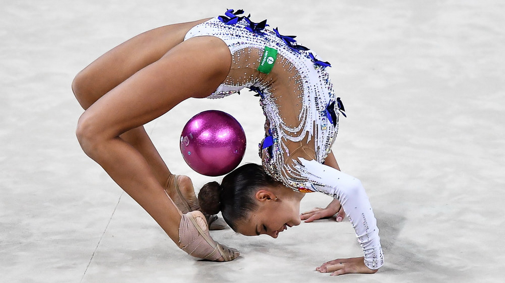
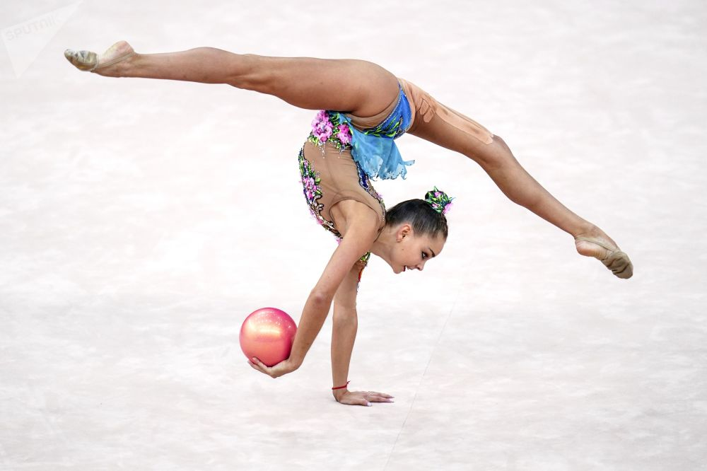
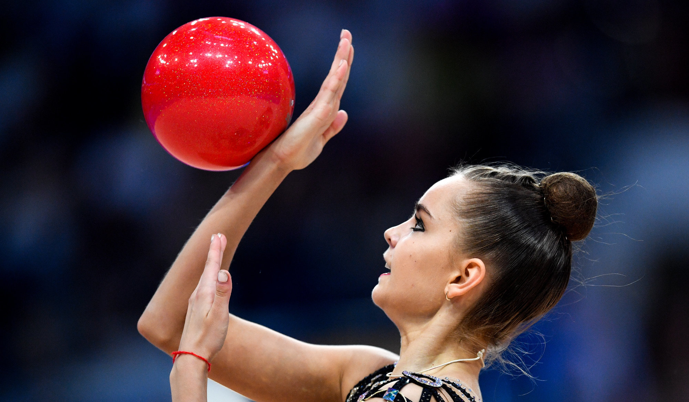

Художественная гимнастика
Мяч
Мяч-предмет, используемый в художественной гимнастике.
Основные элементы с мячом включают бросание, подпрыгивание или перекатывание.
Гимнастка должна использовать обе руки и работать на всей площади пола, показывая непрерывное плавное движение.
Мяч иногда кладут на спину, в то время как гимнаст выполняет такой навык, как обход.


